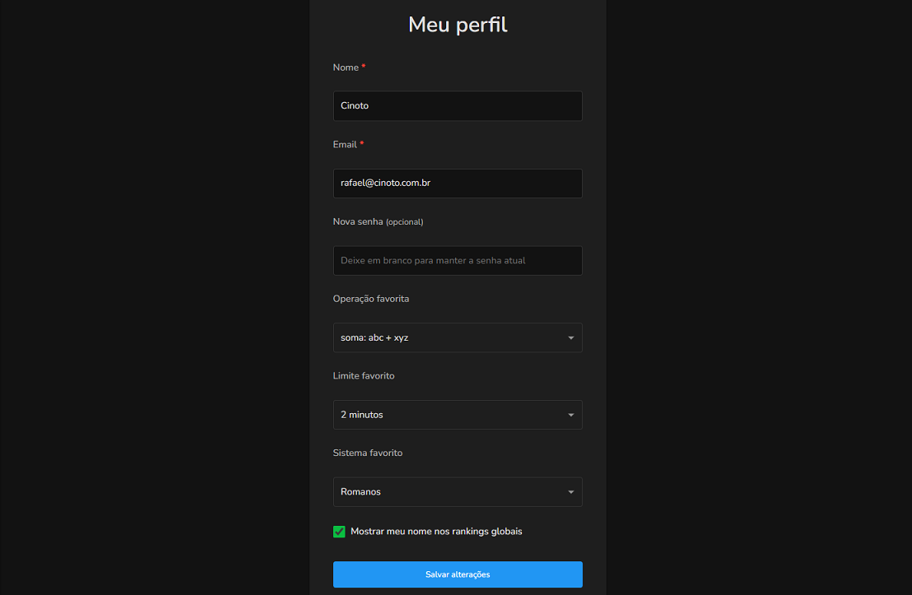
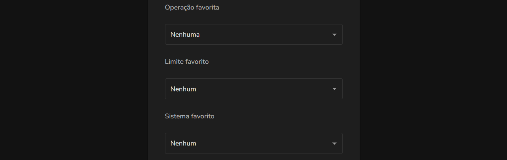

Sobre o perfil no Numix
Visão geral
Na página de perfil você pode personalizar suas informações e preferências no Numix.

Informações pessoais
Nome
Você pode alterar seu nome a qualquer momento, e a mudança será refletida em todos os rankings imediatamente.
O email é o que você usa para entrar no sistema. Se você mudá-lo, usará o novo email na próxima vez que entrar.
Senha
Você pode alterar sua senha a qualquer momento. Preencha apenas se quiser mudar sua senha atual.
Treino favorito
Configure seu treino favorito escolhendo uma operação, um limite e um sistema. Escolha como favorito o treino que você mais pratica, e pode mudar isso quando quiser. Essa configuração facilita:
Ao entrar em novo treino
A página já virá pré-configurada com seu treino favorito e basta clicar em "Começar treino" para treinar.
Ao entrar em rankings
A página de rankings já exibirá automaticamente o ranking do seu treino favorito.

Privacidade nos rankings
Você pode escolher se deseja mostrar seu nome nos rankings globais do Numix.
Aparecer nos rankings globais
Quando esta opção está ativada:
- Seu nome aparece nos rankings globais de todas as operações que já treinou;
- Outros usuários podem ver suas pontuações;
- Outros usuários podem clicar no seu nome para ver seus recordes.
Quando esta opção está desativada:
- Seu nome não aparece nos rankings globais;
- Você ainda pode ver os rankings de outros usuários;
- Seus recordes continuam salvos normalmente.